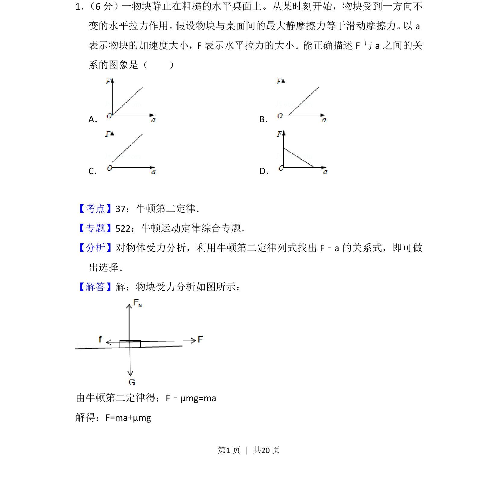
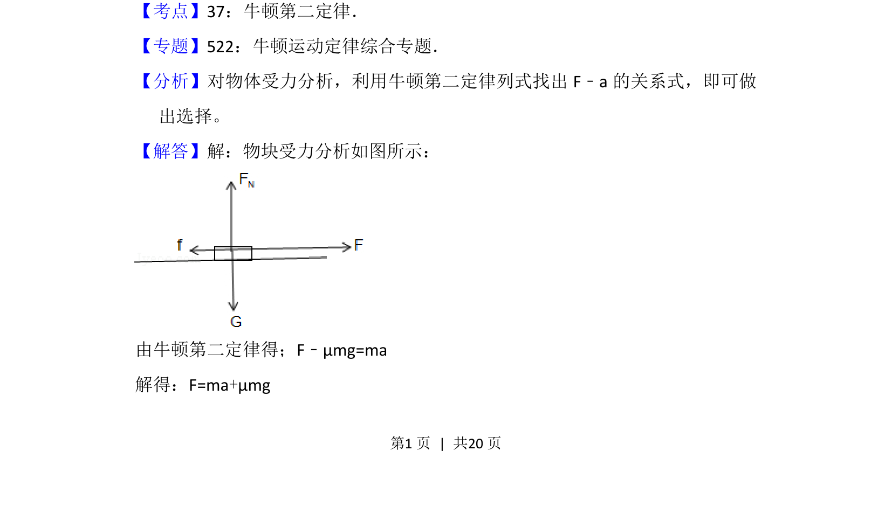
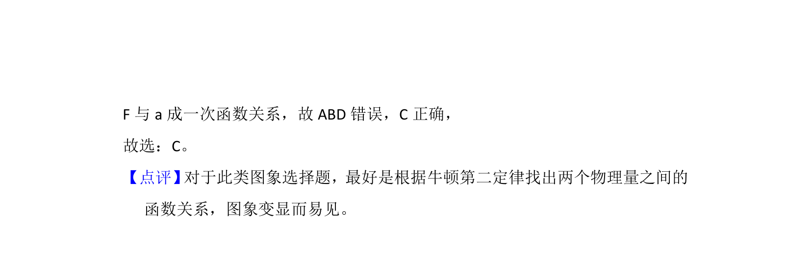

考点：牛顿第二定律 滑动摩擦力 最大静摩擦力 F-a图象

物块在粗糙水平面受水平拉力，考查F与a关系图象及牛顿第二定律的应用。


📄 原 PDF 第 1 页：
素材/真题/吉林/2008-2024·（吉林）物理高考真题/2013年高考物理试卷（新课标Ⅱ）（解析卷）.pdf
1． （6分）一物块静止在粗糙的水平桌面上。从某时刻开始，物块受到一方向不 变的水平拉力作用。 假设物块与桌面间的最大静摩擦力等于滑动摩擦力。 以a 表示物块的加速度大小，F表示水平拉力的大小。能正确描述F与a之间的关 系的图象是（ ） A．B． C．D．
【考点】37：牛顿第二定律．菁优网版权所有 【专题】522：牛顿运动定律综合专题． 【分析】对物体受力分析，利用牛顿第二定律列式找出F﹣a的关系式，即可做 出选择。 【解答】解：物块受力分析如图所示： 由牛顿第二定律得；F﹣μmg=ma 解得：F=ma+μmg